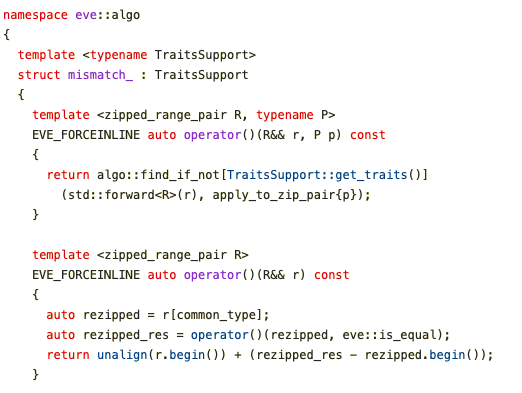

SIMD in C++20:
EVE of a New Era
Joel Falcou & Denis Yaroshevskiy
Slides:
https://tinyurl.com/eve-simd-2021
Elevator pitch
TODO: intro SIMD and EVE
eve::algo
Algorithms avaliable
all_of/any_of/none_of
find/find_if/find_if_not
equal/mismatch
reduce
inclusive_scan_inplace/inclusive_scan_to
remove/remove_if (*)
Find a negative number
Find a negative number
Valid identifier
Mismatch int/int
Mismatch int/double
Mismatch real code
